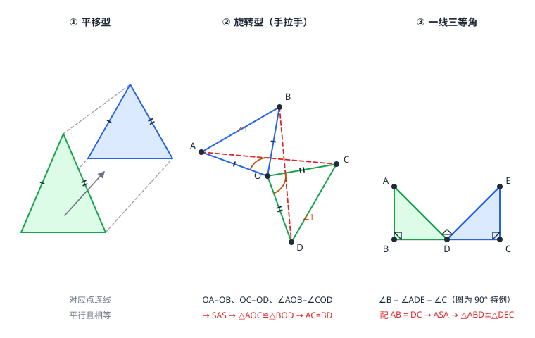

全等三角形的基本模型
判定定理（SSS、SAS、ASA、AAS、HL）本身不长在题里，长在题里的是它们摆好的姿势：平移型（对应点连线平行且相等）、旋转型（手拉手，共顶点两组等线段）、一线三等角（一条直线上三个等角，配一对对应边即全等）。模型不是新定理，是判定定理的速查表。
| 所属主题 | 三角形 |
|---|---|
| 所属模块 | 几何 |
| 课标学段 | 第四学段（7~9 年级） |
| 前置知识 | 全等三角形 |
| 核心素养 | 几何直观推理能力模型观念 |
教材定位
人民教育出版社《人教版（2024版）义务教育教科书·数学》
八年级上册第14章 全等三角形14.2 三角形全等的判定
对应八上 14.2 判定在典型图形结构里的组合运用。教材以例题形式出现，本篇把它整理成「手拉手」「一线三等角」两个可复用的模型。
说明
全等的判定条件凑齐就完事，难的是「从复杂图形里把两个三角形挑出来、把隐藏条件找齐」。常考的图形基本是三种运动留下的样子：平移型——一个三角形沿某方向错位得到另一个，对应点的连线平行且相等；旋转型——两个三角形共一个顶点（手拉手），从顶点各伸出两组等长线段；一线三等角——B、D、C 三点在同一直线上，A、E 在同侧，∠B、∠ADE、∠C 三个角相等。
模型的价值不是背结论，是「认姿势」：看到共顶点的两组等线段，条件反射地找 SAS；看到沿直线摆的三个等角，条件反射地推第四个等角再配边。隐藏条件通常藏在公共边、公共角、对顶角和「公共角加公共角」里——先把它们标到图上，判定条件往往已经凑了一大半。
使用场景
测量转移：量不到的距离（河宽、湖对岸两点）用全等把线段「搬」到可量的位置——旋转型共顶点、对顶角当夹角，SAS 立即成立。
对称结构与等角设计（伞骨、风车、格栅、折带装饰）：安装的等长条件天然构成手拉手或一线三等角，证「两根拉条相等」就是证一次全等。
注意点
旋转型里 ∠AOC=∠BOD 的理由是「同加（或同减）一个公共角」，不是对顶角——两边并不互为反向延长线。写错理由，证明链条在第一环就断。
一线三等角中已知边必须落在对应位置：△ABD≌△DEC 的对应关系下，AB 配 DC、BD 配 EC、AD 配 DE。把已知边配错（例如拿 AB 去配 EC），ASA/AAS 都拼不齐。
证明

图 1：三大基本模型。平移型对应点连线平行且相等；旋转型（手拉手）共顶点两组等线段；一线三等角配一对对应边即全等（图为 90° 特例）
证明
结论 1手拉手模型里，公共角两侧同加一个角，两个大角就相等：∠AOC=∠BOD。
旋转型（手拉手）为什么成立：公共顶点 O，两组等线段 OA=OB、OC=OD，且 ∠AOB=∠COD。∠AOC=∠AOB+∠BOC，∠BOD=∠COD+∠BOC——两个式子右边都含有公共角 ∠BOC，又 ∠AOB=∠COD，同加一个角得 ∠AOC=∠BOD。（图 1 中两个标 ∠1 的角）
关键一步关键一步是等式的性质：两个和式右边含同一个公共角 ∠BOC，已知 ∠AOB=∠COD 又给出两个相等的加项，两边同加同一个数则和相等。理由是「同加一个角」，不是对顶角——这两组角并不互为反向延长线。
结论 2手拉手模型里 △AOC≌△BOD，所以 AC=BD。
配上 OA=OB、OC=OD，夹角 ∠AOC 与 ∠BOD 相等，SAS 得 △AOC≌△BOD，于是 AC=BD——「两只拉住的手」一样长。这就是手拉手模型：共顶点、两组等边、一个等角，全等自动到手。
关键一步关键一步是 SAS 的条件齐了：两组等边 OA=OB、OC=OD，加上夹在它们之间的等角 ∠AOC 与 ∠BOD 相等（上一条刚证）。角必须是两等边的夹角才叫 SAS；条件对上才能全等，全等的对应边相等给出 AC=BD。
结论 3一线三等角里，平角被 DA、DE 切成三份：∠BDA+∠ADE+∠EDC=180°。
一线三等角为什么成立：B、D、C 共线，A、E 在直线同侧。以 D 为中心，从 DB 方向转到 DC 方向恰好经过 DA、DE，所以 ∠BDA+∠ADE+∠EDC=180°（平角被切成三份）。
关键一步关键一步是平角的定义：B、D、C 共线，∠BDC 是平角，从 DB 转到 DC 的路上依次经过 DA、DE，于是这个平角被切成三份，三份之和仍是 180°。这条式子是后面凑出第四个等角时唯一的杠杆。
结论 4一线三等角里，第四个等角可以凑出来，△ABD 与 △DEC 全等。
设三个等角 ∠B=∠ADE=∠C=θ。在 △ABD 里 ∠BDA=180°−θ−∠BAD，代入平角关系得 ∠EDC=180°−θ−∠BDA=∠BAD；同理 ∠BDA=∠DEC。于是 △ABD 与 △DEC 三对角分别对应相等，再配一对对应边（如 AB=DC），ASA 得全等——对应边 BD=EC、AD=DE。
关键一步关键一步有两条：一是平角关系式 ∠BDA+∠ADE+∠EDC=180°，二是三角形内角和 180°——在 △ABD 里用内角和写出 ∠BDA=180°−θ−∠BAD，代入平角关系式才能解出 ∠EDC=∠BAD，同理得 ∠BDA=∠DEC。三对角齐了，再配一对对应边（如 AB=DC）凑成 ASA，那条边必须落在正确的对应位置上。
动手实验
剪两个全等的三角形纸片：把一个平移、绕一点旋转、翻面，分别与另一个比较——不管怎么摆，只要对应关系不变，它们总能重合。在方格纸上画一线三等角（三个 60° 角，B、D、C 共线），量出 BD 与 EC——长度相等，正是模型结论；换 45° 再试一次，仍然相等。
解题思路
认模型三问：①图上要证的是哪两个三角形？②它们的位置像哪种运动——错位并排（平移型）、共顶点（旋转型）、沿一条直线摆（一线三等角）？③条件里最像判定定理的是哪几个（等边、等角、公共件）？三问答完，判定基本已经选定。
把隐藏件先标图：公共边、公共角、对顶角、中点（等线段）、平行（内错角）——标完再数判定条件，缺哪个补哪个。一线三等角先写角恒等式 ∠BDA+∠ADE+∠EDC=180°，把 ∠EDC=∠BAD 推出来，再配已知边用 ASA；旋转型先把 ∠AOC=∠BOD 的「同加公共角」写全再上 SAS。
按场景的例题
例 1（场景：测量与工程） 测池塘两端的距离
池塘两端 A、B 之间的距离无法直接测量。在池塘外取一点 O，用皮尺截取 OC=OA、OD=OB，量得 CD 的长。为什么 CD 就等于 AB？
解：OC=OA、OD=OB（截取保证）；∠COD 与 ∠AOB 是对顶角（O 是公共顶点，两边互为反向延长线）→ 相等。在 △COD 与 △AOB 中：OC=OA，∠COD=∠AOB，OD=OB → SAS → △COD≌△AOB → CD=AB（全等三角形对应边相等）。量 CD 即得池塘宽。
答：SAS 证 △COD≌△AOB，对应边 CD=AB。
例 2（场景：图形设计） 装饰带的一线三等角
装饰带沿一条直线摆出三个 60° 的角（一线三等角）：∠B=∠ADE=∠C=60°，已知 AB=DC=2 米，BD=1.5 米。求 EC 的长。
解：B、D、C 共线，A、E 在直线同侧。由平角关系 ∠BDA+∠ADE+∠EDC=180° 且 ∠ADE=60°，结合 △ABD 内角和，得 ∠EDC=∠BAD（详见原理推导）。于是 △ABD 与 △DEC 中：∠B=∠C（已知），∠BAD=∠EDC（已推），AB=DC（已知）→ ASA 全等 → 对应边 BD=EC=1.5 米。
答：EC=1.5 米。
例 3（场景：物理情境） 伞骨张开的横撑
伞顶 O 处四根伞骨对称安装：OA=OC，OB=OD，张开时 ∠AOB=∠COD=35°。横撑 AB 与 CD 相等吗？为什么？
解：在 △AOB 与 △COD 中：OA=OC（对称安装），∠AOB=∠COD=35°（已知），OB=OD（对称安装）→ SAS → △AOB≌△COD → AB=CD。横撑相等，伞面撑开时受力均匀。
答：相等；SAS 直接证 △AOB≌△COD。
常用推论
旋转型的角恒等式：∠AOC=∠AOB+∠BOC，∠BOD=∠COD+∠BOC，∠AOB=∠COD ⟹ ∠AOC=∠BOD——「同加公共角」。
一线三等角自动送出两个等角：∠EDC=∠BAD、∠BDA=∠DEC，不需要另行证明；三个等角为 90° 时即「一线三垂直」，是同一模型的直角版。
隐藏条件四大来源：公共边、公共角、对顶角、平行线的内错角/同位角——标图时先扫这四样。
易错点
错旋转型证明里把 ∠AOC=∠BOD 的理由写成「对顶角相等」。
为什么错对顶角要求两边互为反向延长线；这里 OA 与 OC、OB 与 OD 都朝同侧张开，∠AOC 与 ∠BOD 是「相等角加同一个公共角」得到的。
正确理由写全：∠AOC=∠AOB+∠BOC，∠BOD=∠COD+∠BOC，而 ∠AOB=∠COD，所以 ∠AOC=∠BOD。
错一线三等角里已知 AB=EC，就写下全等。
为什么错对应关系是 △ABD≌△DEC：AB 的对应边是 DC，不是 EC。配错边，ASA 的「角—边—角」拼不起来。
正确先写对应 △ABD≌△DEC，再核对已知边落在哪对对应边上：AB 配 DC、BD 配 EC、AD 配 DE。
错平移型里只凭「两个三角形长得一样」就写全等。
为什么错全等要条件，不要观感；图上看着一样而条件不足的情况很多。
正确从平移带来的对应线平行（内错角相等）与等长线段出发，老老实实凑判定。
直观理解
模型是判定定理的「摆姿」：平移是错位并排，旋转是手拉手围一圈，一线三等角是沿直线上摆摊。做题像认脸——先认运动方式（这图是谁变的形），再认判定定理那张脸（SSS/SAS/ASA/AAS）。运动不改变形状和大小，所以三种运动天然制造全等；模型不过是运动留在图上的手印。